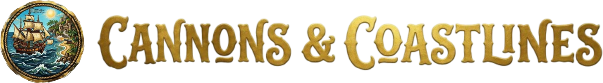
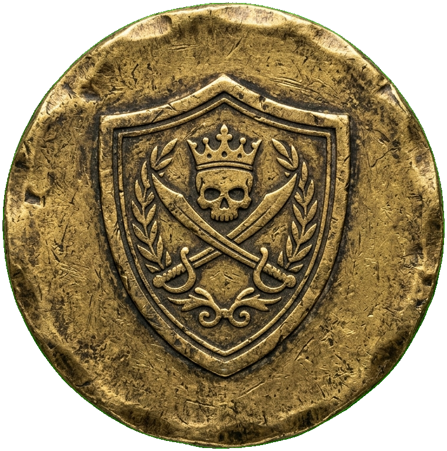
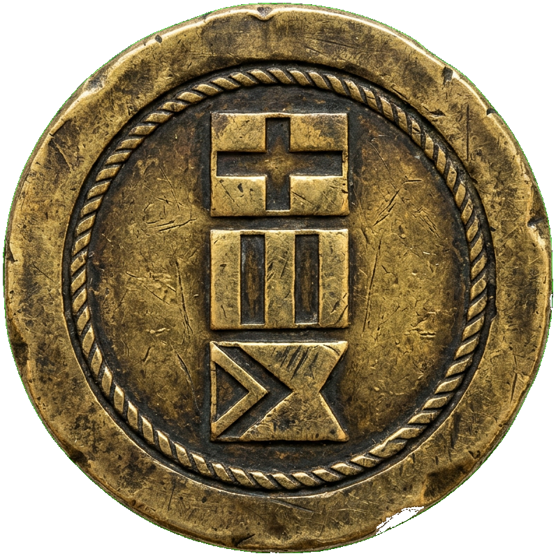
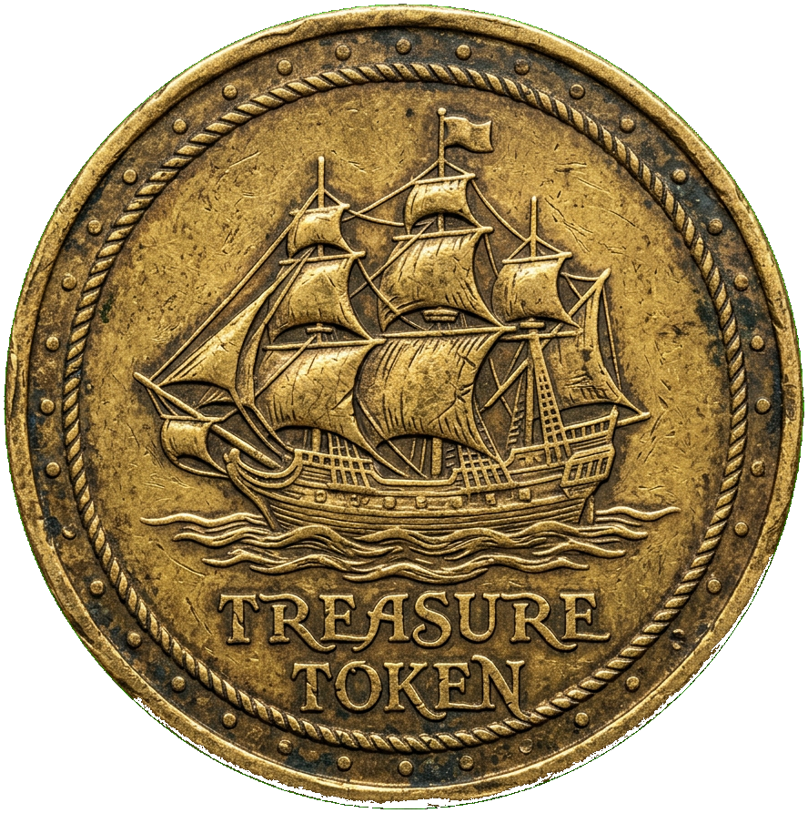
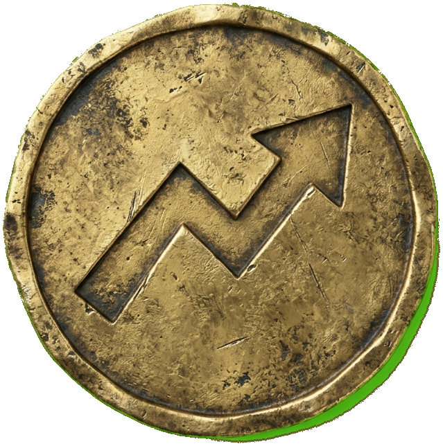
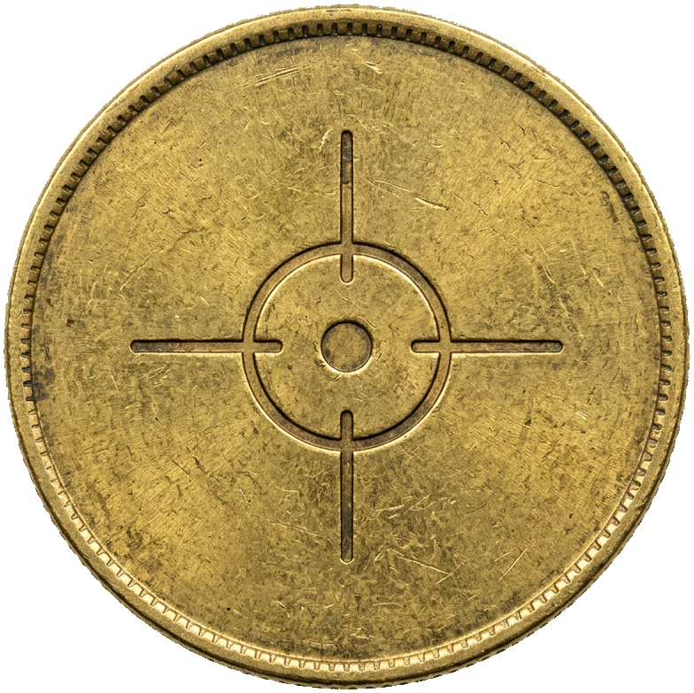
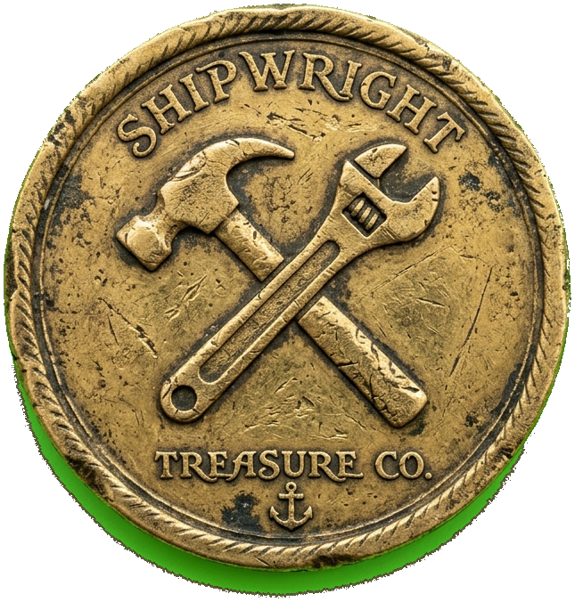
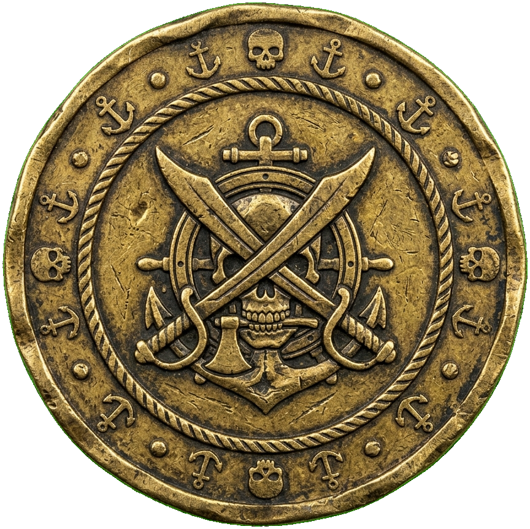

v0.1 — In Development This rulebook is a work in progress. Rules, factions, and fleet compositions are subject to change.
Cannons & Coastlines is a tabletop game for 2–20 players. Rival fleets clash across an open table in a fantastical Age of Sail, racing to capture islands, hoard treasure, and sink each other. There's no board and no grid. Ships roll freely across your table on built-in wheels, and when it's time to fight, you fire real miniature cannons at each other's ships.
Players: 2–20 (Default mode: 2–6, Group mode: 6–20) Ages: 12+ Play time: 30–90 minutes depending on player count
Ships roll on wheels built into their hulls. No grid, no hexes, no tape measure. Tiny pressure-based cannons launch cannonballs across the table, and you aim them by rotating your ship. HP is physical: each fitting is a removable peg, and when your ship takes a hit, you pull one off and toss it overboard. 3D-printed islands sit in the middle of the table as territory to fight over, and capturing them gives you treasure coins. Those coins are drawn blind from a shared bag, and each one can be spent for a different one-time ability.
Everything in this game is 3D printed (except the draw bag and paper flags). Here's what each player needs to print before playing.
| Piece | Quantity | Notes |
|---|---|---|
| Ships (your faction) | 2–5 | Depends on faction. See your faction reference card. |
| Fittings (pegs) | Varies | Masts, cargo, supplies, etc. Enough for all your ships at full HP. See faction card for counts and types. |
| Cannons | 3–4 | Flag color or neutral (black, grey, etc.). Shared across your ships and islands. |
| Cannonballs | 15–20 | Flag color or neutral. |
| Flag pieces | 10–15 | In your alliance/team color. Enough for ships + islands you might capture. |
Each player prints the following. Pool everything together at game time. With more players, you'll naturally end up with extra islands and coins, which is fine — bigger groups need more of both.
| Piece | Per Player | Notes |
|---|---|---|
| Islands | 2–3 | Mix of small, medium, and large. |
| Rocks / sea stacks | 1 | Optional terrain. |
| Reefs / shoals | 1 | Optional terrain. |
| Coins | 20 | 2 Brace for Impact, 2 Signal Flags, 4 Full Sail, 2 Evasive Maneuvers, 4 Skilled Gunner, 4 Repair Crew, 2 Boarding Party. |
| Draw bag | — | One total. Cloth pouch, not printed — use any small bag. Somebody bring one. |
Extra flags can be made from paper and tape if you run short.
Each player controls a fleet of 2–5 ships depending on faction. Each ship has:
Hull length runs about 5–7 inches depending on faction.
Small pressure-based snap launchers. You press down on a flexible mechanism, release it, and the cannonball flies out. No springs, no rubber bands, no metal parts. Everything is printable.
Each player gets a handful of cannons in their flag color (or a neutral color like black or grey). You'll move them between ships and islands as needed during play. Every cannon fits every slot on every ship and island (the slot shape is the same everywhere).
A rounded ball with a small tail fin so it doesn't roll away when it lands. About 10mm wide, 13mm long. 3D printed in PLA, or optionally in TPU if you want less bounce.
Each player gets 15–20 cannonballs in their flag color or a neutral color.
These are the territories you're fighting over. Three sizes:
| Size | Dimensions | Cannon Slots | Flag Holes |
|---|---|---|---|
| Small | ~3 × 3" | 1 | 1 |
| Medium | ~4 × 5" | 2 | 1 |
| Large | ~6 × 6" | 3 | 1 |
They've got sculpted palm trees, rocks, beaches, and small buildings. Use 4–12 per game depending on player count.
Small flag-on-a-stick pieces in several colors. Each color should have enough flags to cover an alliance's worth of ships and islands (~15+ per color). Players or teams pick a flag color during setup. Ship flags plug into the flag socket on the ship.
Round tokens, about 1" across, with an action icon engraved on one side. The other side is blank. You draw them blind from a shared bag. See Coin Actions for the full list.
A cloth pouch. All coins live in here when they're not in somebody's hoard.
Each player picks a faction and takes that faction's ships, flags, cannons, and cannonballs. Put your faction reference card face-up in front of you.
Players take turns placing islands one at a time, going clockwise.
| Players | Islands |
|---|---|
| 2 | 4 |
| 3–4 | 6 |
| 5–6 | 8 |
| Group mode (6–20) | 10–12 |
Players may add 2–6 rocks or reefs anywhere in the play area, alternating one piece at a time.
Dump all the coin tokens into the draw bag. Shake it up.
Pick Default mode (2–6 players) or Group mode (6–20 players). For Default mode, the youngest player goes first. Play goes clockwise.
Players take turns clockwise. On your turn:
Then it's the next player's turn.
Each of your surviving ships does exactly one of the following on your turn.
Turn your ship up to 90 degrees in either direction, then roll it forward. You get one rotation and then roll the wheel a number of times equal to your faction's Move Count. All rolls go in the same direction (wherever your ship is pointing after the turn).
| Move Count | Sequence |
|---|---|
| 1 | Turn → Roll |
| 2 | Turn → Roll → Roll |
| 3 | Turn → Roll → Roll → Roll |
Rules:
Queen's Fleet: The Disciplined Crew ability lets Queen's Fleet ships turn up to 180 degrees instead of 90°. Once per turn per ship.
The cannon fires straight out from the slot. You aim by picking which slot to use and by how you positioned the ship earlier.
A ship that fires doesn't move this turn.
You can fire with more than one ship on your turn. Just move the cannon between them.
A ship touching an island can do one of these. It can't also move or fire from itself this turn.
Raise Flag. If the island has no flag, or you've already cleared the enemy defenders (see Island Conflicts), and your ship was already touching the island at the end of your last turn, plant your flag. The island is now yours.
Collect. If the island flies your flag, draw 1 coin blind from the bag. Add it to your hoard.
Fire from Island. If the island flies your flag, plug a cannon into one of the island's cannon slots and fire from there.
One island action per ship per turn, even if the ship is touching more than one island.
Coins aren't actions. You spend them at the start of your turn, before any of your ships act. Spend as many as you want, then move on to ship actions.
Each coin has an action icon on its face. When you spend it, do what it says, then toss it back in the draw bag.
No hand limit. Hoard as many as you can get.
See the Coin Actions table for what each coin does.
If a cannonball hits an enemy ship (physically strikes the model), that's a hit.
HP = Fittings + 1. A ship with 3 fittings has 4 HP total. Lose all 3 fittings and it's at 1 HP. One more hit finishes it.
If your ship is touching an enemy ship, you can spend a Boarding Party coin to deal 1 hit (pull 1 fitting, toss it overboard). This counts as that ship's action for the turn.
Boarding a ship that still has fittings only does damage. It doesn't capture the ship.
To take over an enemy ship that's dead in the water and add it to your fleet, spend both of these coins in the same turn while your ship is touching it:
Then: pull the enemy flag, stick yours on, and restore 1 fitting. The ship is yours now and can act starting next turn.
If a dead-in-the-water ship (1 HP) takes one more hit from anything (cannonball or boarding), it's scuttled: gone from the game for good.
Why scuttle? A dead-in-the-water enemy ship is a prize waiting to be claimed. If another player spends a Boarding Party + Repair Crew, they get a free ship added to their fleet. That's bad for you. Putting one more hit into that dead ship removes it from the game entirely, denying the prize. You can also scuttle your own dead ships (fire at them yourself) if you'd rather sink them than let an opponent take them. It costs you a ship either way, but at least nobody else gets it.
If the ship still has fittings (not dead in the water), spend a Repair Crew coin on it. Restore 1 fitting from the overboard pieces nearby. No other ship needs to be nearby.
If the ship is dead in the water (0 fittings), one of your other ships must be touching it. Spend a Repair Crew coin to restore 1 fitting. You don't need a Boarding Party coin for your own ships, but you do need a ship there to carry out the repairs.
An island can only fly one flag at a time. Here's what happens when multiple players show up.
If two or more players have ships touching an uncaptured island at the same time, nobody raises a flag until the fight's over. Shoot, board, or otherwise clear out the competition. Once only one player has ships at the island, that player can raise their flag next turn.
You can sail to an island flying an enemy flag. The flag stays until you deal with the situation:
Either way, you must be touching the island at the end of one turn and the start of the next, then spend your action to swap the flag.
Multiple ships with your flag can share an island. No conflict.
A dead-in-the-water ship touching an island can't block capture. It can't defend anything. But if someone captures that dead ship (Boarding Party + Repair Crew) before the island changes hands, the newly captured ship does count as a defender.
| Coin | What It Does |
|---|---|
 Brace for Impact | Slot this coin into a ship's coin slot. It stays there as a shield. The next time that ship is hit, the coin absorbs the hit (no fitting pulled) and is discarded back to the bag. |
 Signal Flags | One of your ships or one allied ship gets a free Move action right now. |
 Full Sail | One of your ships gets two Move actions this turn instead of one. Each move is a separate turn-then-roll sequence. |
 Evasive Maneuvers | One of your ships slides exactly one ship-width sideways (port or starboard) without turning. |
 Skilled Gunner | One of your ships fires twice this turn. Swap the cannon between slots between shots. |
 Repair Crew | Restore 1 fitting to one of your ships. If the ship is dead in the water, one of your other ships must be touching it. Also required for capturing a dead enemy ship. |
 Boarding Party | If your ship is touching an enemy ship, deal 1 hit (pull 1 fitting, toss overboard). This uses that ship's action for the turn. Also required for capturing a dead enemy ship. |
The draw bag should have roughly 20 coins per player. Each player prints 20 coins (see Print List) and dumps them all in the bag at game start. The ratio per 20 coins:
| Coin | Per 20 |
|---|---|
| Brace for Impact | 2 |
| Signal Flags | 2 |
| Full Sail | 4 |
| Evasive Maneuvers | 2 |
| Skilled Gunner | 4 |
| Repair Crew | 4 |
| Boarding Party | 2 |
The game ends when any of these happens:
| What You Have | Points |
|---|---|
| Each surviving ship with your flag | 3 |
| Each island with your flag | 2 |
| Each unspent coin in your hoard | 1 |
| Bonus: Player with most ships | +2 |
| Bonus: Player with most islands | +2 |
| Bonus: Player with most coins | +2 |
Ties on bonuses: everyone who tied gets the full +2.
Highest total wins. In team play, add teammates' scores together.
Everyone acts at the same time. Turns alternate between two phases:
All players act at the same time. Spend any coins first, then each ship may take a Move action. Movement coins (Evasive Maneuvers, Full Sail, Signal Flags) go in this phase.
Set a timer for 60–90 seconds. When it goes off, any unfinished moves are lost.
All players act at the same time. Spend any coins first, then each ship may Fire or do an Island action (Raise Flag / Collect / Fire from Island). Action coins (Brace for Impact, Skilled Gunner, Repair Crew, Boarding Party) go in this phase.
Same timer (60–90 seconds). If two players shoot at the same target, both shots count.
Movement and Action phases keep alternating until the game ends.
Alliances are marked with flags. At the start of the game, each alliance (or team) picks a shared flag color from the game's flag stash. Allied players fly that color on all their ships and islands instead of individual colors.
The game should include enough flags of each color to cover a good-sized alliance. If you run out, make extras from paper and tape, or mix two colors for the same alliance.
Seven factions. Queen's Fleet and Corsairs ship with the base game. The other five are expansion packs.
See the Faction Reference Cards for full stat blocks.
| Faction | Ships | Fittings / HP | Slots | Move | Ability |
|---|---|---|---|---|---|
| Queen's Fleet | 3 frigates | 3 / 4 | 4 | 1 | Disciplined Crew — 180° turns |
| Corsairs | 4 sloops | 2 / 3 | 3 | 2 | Plunder — extra coin on board/capture |
| Treasure Fleet | 2 junks | 2 / 3 | 4 | 1 | Bountiful Harvest — collect 2 coins |
| Sun Fleet | 3 barges | 4–5 | 4 | 1 | Stone Hulls — ignore first hit each turn |
| Shadow Fleet | 3 galleons | 2 / 3 | 3 | 1 | Return from the Deep — bring back sunk ships |
| The Industry | 3 warships | 3 / 4 | 1 (forward) | 2 | Fast, but can only shoot forward |
| The Islanders | 5 canoes | 1 / 2 | 1 (rear) | 3 | Home Waters — start with a free island + ship |
The cannons work by flexing printed plastic, so they'll vary between prints and wear over time. Shoot a few practice rounds at the start of each game to get your eye in.
4×4 ft or 5×5 ft for 2 players. 6×6 ft or bigger for Group mode.
| Action | What To Do |
|---|---|
| A — Move | Turn up to 90°, then roll the wheel forward up to your Move Count. |
| B — Fire | Plug cannon into a slot. Press to fire. Ship stays put this turn. |
| C — Island | Pick one: Raise your flag / Collect 1 coin / Fire from an island slot. Ship stays put. |
Spend coins at the start of your turn, before ship actions.
| What Happened | Result |
|---|---|
| Cannonball hits enemy ship | Pull 1 fitting, toss overboard |
| Ship has no fittings left | Dead in the water. Can't move, can still shoot. 1 HP left. |
| Dead ship gets hit again | Scuttled. Gone for good. |
| Hit a friendly ship | Nothing happens |
| Hit terrain | Nothing happens |
| Target | How |
|---|---|
| Dead enemy ship | Touch it + spend Boarding Party + Repair Crew (same turn). It joins your fleet at 1 fitting. |
| Uncaptured island | Touch the island, wait a turn, then Raise Flag. |
| Enemy island (nobody guarding it) | Touch the island, wait a turn, then swap the flag. |
| Enemy island (ships there) | Clear the defenders first, then capture as above. |
| What | Points |
|---|---|
| Each surviving ship | 3 |
| Each island you hold | 2 |
| Each unspent coin | 1 |
| Most in any category | +2 bonus |